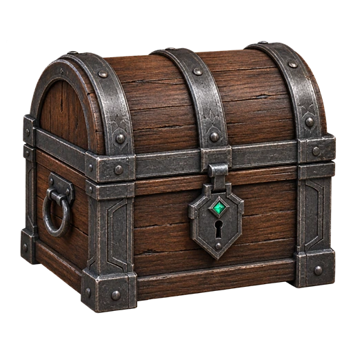

O que o Glyph paga e o que ele cobra, numa tela só. Nenhum número aqui foi
escrito à mão: todos são lidos do código, do ITEMS_DB e da migração mais nova que
redefine open_chest. Onde o dado mora no servidor, a folha diz e traz o SQL de conferir.
A barra é a curva de tiers. Alcance é quantos itens o baú realmente pode entregar — a curva cruzada com o catálogo, respeitando as mesmas exclusões que o servidor aplica. É a coluna que ninguém tinha.
| Baú | Curva de tiers | Tier médio | Fragmentos | Pity | Alcance |
|---|---|---|---|---|---|
| Comum | 80%15% | 1.25 | 0 | — | 53 |
 Incomum |
80%15% | 2.25 | 5–15 | — | 55 |
| Ciclo (legado) | 80%15% | 3.25 | 10–30 | 15 → t3 | 53 |
| Raro | 80%15% | 3.25 | 30–80 | 10 → t3 | 53 |
| Épico | 80%20% | 4.20 | 80–200 | 8 → t4 | 31 |
| Lendário | 100% | 5.00 | 150–350 | 6 → t5 | 11 |
| Mítico | 100% | 6.00 | 200–500 | 5 → t6 | 3 Temporada 0 - Genesis 3 Aurora I |
A régua do jogo é ~1 EXP por minuto executado, então a coluna de horas é o custo real de cada degrau.
| # | Patente | EXP total | Degrau | Horas | Itens |
|---|---|---|---|---|---|
| 1 | Vagante | 0 | — | 0 h | 6 |
| 2 | Escudeiro | 6.000 | +6.000 | 100 h | 5 |
| 3 | Cavaleiro | 15.000 | +9.000 | 250 h | 5 |
| 4 | Lorde | 30.000 | +15.000 | 500 h | 4 |
| 5 | Barão | 60.000 | +30.000 | 1.000 h | 3 |
| 6 | Conde | 120.000 | +60.000 | 2.000 h | 4 |
| 7 | Duque | 240.000 | +120.000 | 4.000 h | 3 |
| 8 | Príncipe | 420.000 | +180.000 | 7.000 h | 3 |
| 9 | Rei | 660.000 | +240.000 | 11.000 h | 4 |
| 10 | Soberano | 1.000.000 | +340.000 | 16.667 h | 4 |
| Desafio de sistema | EXP | Baú | id |
|---|---|---|---|
| Complete sua primeira arena | +300 | — | system-first-arena-gold |
| Concluir o tutorial | +25 | — | tutorial-quest |
| Criar o primeiro ciclo | +25 | — | system-first-cycle |
| Instalar a primeira campanha | +25 | — | system-first-campaign |
| Concluir o primeiro ciclo | +25 | — | system-first-cycle-report |
| Criar a primeira arena | +25 | — | system-first-arena-created |
| Concluir a primeira acao | +25 | — | system-first-action-done |
| Planejar o primeiro dia | +25 | — | system-first-planned-day |
| Equipar o primeiro item | +25 | — | system-first-equipped-item |
| Escolher a primeira missao individual | +25 | — | system-first-individual-mission |
| Entrar num cla | +25 | — | system-first-clan |
Lida de views/ReportsView.tsx. O tipo Incomum não aparece
aqui: ele existe no jogo, mas fica fora da escada do ciclo.
| EXP concedida | Nota mínima | Baú |
|---|---|---|
| 14.400 | 90 | Lendário |
| 7.200 | 80 | Épico |
| 2.500 | 70 | Raro |
| 750 | — | Comum |
Cinco peças por temporada, sempre. O baú Mítico sorteia skin, borda e banner; o selo entrega insígnia e tema. Coleção incompleta estreita o baú: com duas peças, o terceiro baú da temporada é duplicata garantida.
| Temporada | skin | border | banner | insignia | ui_skin | Peças | Quests |
|---|---|---|---|---|---|---|---|
| Temporada 0 - Genesis 2025-12-21 |
✓ | ✓ | ✓ | ✓ | ✓ | 5/5 | 3 |
| Aurora I 2026-09-22 |
✓ | ✓ | ✓ | ✓ | ✓ | 5/5 | 4 |
| Zenite I 2026-12-21 |
— | — | — | — | — | 0/5 | 0 |
| Eclipse I 2027-03-20 |
— | — | — | — | — | 0/5 | 0 |
| Egide I 2027-06-21 |
— | — | — | — | — | 0/5 | 0 |
| Aurora II 2027-09-23 |
— | — | — | — | — | 0/5 | 0 |
| Zenite II 2027-12-21 |
— | — | — | — | — | 0/5 | 0 |
| Eclipse II 2028-03-19 |
— | — | — | — | — | 0/5 | 0 |
| Egide II 2028-06-20 |
— | — | — | — | — | 0/5 | 0 |
| Aurora III 2028-09-22 |
— | — | — | — | — | 0/5 | 0 |
| Zenite III 2028-12-21 |
— | — | — | — | — | 0/5 | 0 |
| Eclipse III 2029-03-20 |
— | — | — | — | — | 0/5 | 0 |
| Egide III 2029-06-21 |
— | — | — | — | — | 0/5 | 0 |
Esta folha lê o repositório. A função que sorteia de verdade mora no Supabase, e migração no repositório não é migração aplicada. Rode isto para comparar:
select
case when pg_get_functiondef(oid) like '%not in (''ui_skin'', ''insignia'')%'
then 'OK - tema e insignia fora do sorteio' else 'DIVERGE do que esta folha mostra' end as filtro,
case when pg_get_functiondef(oid) like '%when ''lendario'' then floor%'
then 'OK - lendario paga fragmento' else 'DIVERGE' end as fragmentos,
md5(pg_get_functiondef(oid)) as impressao
from pg_proc where proname = 'open_chest';
like.